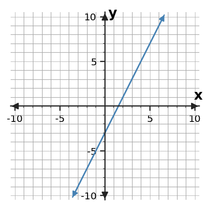
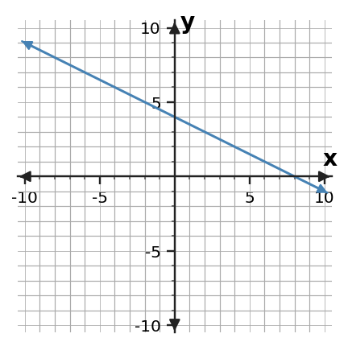

Algebra 1 · 1.3 Function Families · Practice 1
1. The outputs are 6, 8, 10, 12 as x increases by 1. Which common family is most likely: linear, quadratic, exponential, or absolute value? Use the change pattern as evidence.
2. The table has first differences 6, 8, 10. The second differences are constant at 2. Which family is most likely? Explain.
3. A quantity is multiplied by 3 each time x increases by 1. Which family best fits this behavior and what pattern is your evidence?
4. A graph has a sharp V-shaped turn and is symmetric about a vertical line. Which family is most likely? Name the feature that supports your choice.
5. Classify y = 3x + 8 by family and cite the equation structure as evidence.
6. Classify y = 3(2x) by family and explain what happens to outputs for +1 changes in x.
7. Classify y = (x - 3)2 + 1 by family. Name one graph feature you would expect.
8. Classify y = |x + 3| - 2 by family and name one table or graph pattern that would confirm your choice.
9. Relationship A has rule y = 3x + 5. Relationship B has rule y = 5x - 1. Which has the greater rate of change? Use the equations as evidence.
10. Compare the two tables. Which relationship changes faster per +1 in x?
| x | A | B |
|---|---|---|
| 0 | 6 | 3 |
| 1 | 9 | 7 |
| 2 | 12 | 11 |
11. A gym plan charges $11 plus $3 per visit. Another charges $5 plus $5 per visit. Which is cheaper at 3 visits? Show the comparison.
12. Relationship A contains (0,4) and (4,16). Relationship B contains (0,8) and (4,16). Compare their rates and starting values.
13. At x = 0 two relationships have outputs 5 and 10; both have rate 3. Explain what they share and why they are still different relationships.
14. One table has constant rate 3; another table doubles its output each step. Give one important comparison between how the two relationships change.
15. Relationship A has y-intercept 3 and slope -3. Relationship B has y-intercept -4 and slope 3. Describe one way their graphs differ without drawing them.
16. When comparing two relationships shown in different representations, list two pieces of evidence you could convert to a common basis for comparison.
17. Find the slope of the line shown. Use two lattice points from the graph and show rise/run.

18. Find the slope of the descending line shown and explain what the negative sign tells you about the direction of the graph.

19. Find the slope represented by the table.
| x | y |
|---|---|
| -2 | 8 |
| 1 | 17 |
| 4 | 26 |
20. The x-steps in the table are uneven. Find the constant slope and verify it with two different row pairs.
| x | y |
|---|---|
| 1 | 6 |
| 3 | 12 |
| 8 | 27 |
21. Find the slope of y = -3x + 10. State which number in the equation gives the slope.
22. Rewrite 3x + y = 11 in slope-intercept form and identify the slope.
23. A water tank loses 6 liters every 2 minutes. Find the rate of change in liters per minute and interpret its sign.
24. A taxi fare starts at $6 and increases by $3.50 per mile. Identify the rate of change and the initial value, and explain the difference between them.